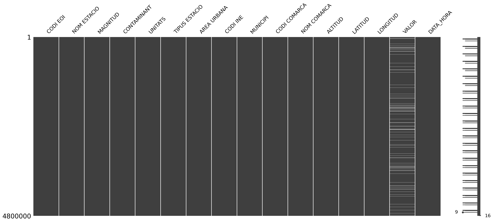

Code
# Print basic information about the environment and tools used
py_ver = !python --version
print(f"Python version (virtual environment):{py_ver[0]}\n\n")
!kedro -VThis is an exploratory analysis of air quality reports for Catalonia region, updated as of 14/05/2025. Data is downloaded from the open data portal of Catalan Government (Generalitat de Catalunya), and includes hourly air quality metrics as well as geospatial information of the capture points.
The objective of this analysis is to find the biggest contributors to air pollution in Catalonia for the time period of the data. In order to get to this, both time evolution and geographic position will be taken into account.
The analysis is structured around a kedro basic workflow, written in Python and uses the following tools / packages:
The diagram of the different processes applied to the data is shown below:
WIP –> to be updated as the analysis progresses.
# Print basic information about the environment and tools used
py_ver = !python --version
print(f"Python version (virtual environment):{py_ver[0]}\n\n")
!kedro -VThe raw data is a unique CSV file with the following columns and data types:
# Load kedro catalog from YAML
from kedro.io import KedroDataCatalog
import pandas as pd
import yaml
with open("../conf/base/catalog.yml", "r") as f:
conf_catalog = yaml.safe_load(f)
catalog = KedroDataCatalog.from_config(conf_catalog)# Load raw data from the catalog
df_raw = catalog.load("air_quality_log");
df_raw.info()/workspaces/dev_ml/src/ds/air_quality/.venv/lib/python3.13/site-packages/kedro_datasets/pandas/csv_dataset.py:175: DtypeWarning:
Columns (39) have mixed types. Specify dtype option on import or set low_memory=False.
<class 'pandas.core.frame.DataFrame'>
RangeIndex: 3425691 entries, 0 to 3425690
Data columns (total 40 columns):
# Column Dtype
--- ------ -----
0 CODI EOI int64
1 NOM ESTACIO object
2 DATA object
3 MAGNITUD int64
4 CONTAMINANT object
5 UNITATS object
6 TIPUS ESTACIO object
7 AREA URBANA object
8 CODI INE int64
9 MUNICIPI object
10 CODI COMARCA int64
11 NOM COMARCA object
12 01h float64
13 02h float64
14 03h float64
15 04h float64
16 05h float64
17 06h float64
18 07h float64
19 08h float64
20 09h float64
21 10h float64
22 11h float64
23 12h float64
24 13h float64
25 14h float64
26 15h float64
27 16h float64
28 17h float64
29 18h float64
30 19h float64
31 20h float64
32 21h float64
33 22h float64
34 23h float64
35 24h float64
36 ALTITUD int64
37 LATITUD float64
38 LONGITUD float64
39 Georeferència object
dtypes: float64(26), int64(5), object(9)
memory usage: 1.0+ GBThe contained data can be divided in the following categories:
Data structure doesn’t follow a strict “row per measurement” lemma, as every row of the file contains 24 data measurements (hourly average per each day).
Some rework will have to be done for easier anaylisis, pivoting the data in order to have one row for each time measurement per station and per parameter.
Data types seem apropiate to the content. Once pivoted, however, new data types will have to be added, such as timestamp for the combined date + hour information. The geographic information, which is plain text or floats, will have to be converted for geospatial analysis. This will be done by converting the whole data type from a pandas normal DataFrame to a geopandas GeoDataFrame (which will retain all of its previous columns plus a ‘geometry’ column).
However, as the raw data contains 3.4M+ rows (and we will be expanding it even more), the first step will be to split the big dataframe into smaller chunks. Then each chunk will be processed separately and saved as a parquet file.
# Optional filter to speed up processes
# Remove for complete analysis
df_raw = df_raw.iloc[:150000]
df_raw.info()# Pivot the data and save as parquet
def pivoting_raw_data(df_raw: pd.DataFrame) -> pd.DataFrame:
df_pivoted = (
df_raw
.drop(columns=["Georeferència"])
.melt(id_vars=["CODI EOI", "NOM ESTACIO", "DATA", "MAGNITUD", "CONTAMINANT", "UNITATS", "TIPUS ESTACIO", "AREA URBANA",
"CODI INE", "MUNICIPI", "CODI COMARCA", "NOM COMARCA", "ALTITUD", "LATITUD", "LONGITUD"],
value_vars=["01h", "02h", "03h", "04h", "05h", "06h", "07h", "08h", "09h", "10h", "11h", "12h", "13h",
"14h", "15h", "16h", "17h", "18h", "19h", "20h", "21h", "22h", "23h", "24h"],
var_name="HORA", value_name="VALOR")
)
return df_pivoted
print(f"Total number of rows: {df_raw.shape[0]}")
max_rows_per_chunk = 350000
index = 1
for i in range(0, df_raw.shape[0], max_rows_per_chunk):
chunk = df_raw.iloc[i:i+max_rows_per_chunk,:]
pivoted_chunk = pivoting_raw_data(chunk)
pivoted_chunk.to_parquet(f"../data/02_intermediate/air_quality_df_{index}.parquet", engine="pyarrow")
index += 1
del df_raw # Load the first chunk of data.
df_bronze = pd.read_parquet("../data/02_intermediate/air_quality_df_1.parquet")# Convert the date and time columns to a single timestamp column.
import os
from datetime import datetime, timedelta
def transform_datetime(df_old: pd.DataFrame) -> pd.DataFrame:
df_old.loc[:, "HORA"] = df_old.loc[:, "HORA"].str.replace("h", "").astype(int)-1
df_new = df_old.assign(
DATA_HORA=lambda s: s.apply(
lambda row: datetime.strptime(
row.loc["DATA"] + " " + str(row.loc["HORA"]) + ":00"
, "%d/%m/%Y %H:%M"
) + timedelta(hours=1),
axis=1
)
).drop(columns=["DATA", "HORA"])
return df_new
df_bronze = transform_datetime(df_bronze)
os.remove("../data/02_intermediate/air_quality_df_1.parquet")
df_bronze.to_parquet("../data/02_intermediate/air_quality_df_1.parquet")At this point it’s importante to check data consistency and missing values, and proceed accordingly depending on the situation.
# Plot missing values matrix to identify broad patterns
import missingno as msno
df_bronze = pd.read_parquet("../data/02_intermediate/air_quality_df_1.parquet")
msno.matrix(df_bronze.sample(5000),figsize=(8,3))
Only two different types of missing data is shown in the sample: one (more frequent) where the actual measurement (“VALOR”) is missing, and another one where the measurement and most of the station info is missing.
For the first one, knowing that only 6% of the info is missing and that the value missing it’s the most important one for the anaylisis, we will drop these measurements from the dataset. This can be done as there is no apparent pattern in the lack of information (e.g. all the info missing in a defined period).
For the second one, if there is a measurement value in “VALOR” we will try to fill the missing info based on the other rows of the dataset (the stations don’t change over time).
# Drop missing measurements
df_bronze.dropna(subset=["VALOR"], inplace=True);
# df_bronze.loc[(df_bronze.loc[:,"NOM ESTACIO"].isna()),:]WiP –> finish inputing missing values
# INPUT MISSING VALUES# Create a geodataframe with the geometry taken from the coordinates in "LATITUD" and "LONGITUD"
import geopandas as gpd
def create_geodataframe(df_new: pd.DataFrame) -> gpd.GeoDataFrame:
gdf_new = gpd.GeoDataFrame(
df_new, geometry=gpd.points_from_xy(
df_new.loc[:,"LONGITUD"], df_new.loc[:,"LATITUD"],crs="EPSG:4326"
)
).drop(columns=["LATITUD", "LONGITUD"])
return gdf_new
gdf_bronze = create_geodataframe(df_bronze)
gdf_bronze.to_parquet("../data/02_intermediate/air_quality_bronze_1.parquet", engine="pyarrow")
del df_bronze# Show first rows of the converted geodataframe
import geopandas as gpd
gdf_bronze = gpd.read_parquet("../data/02_intermediate/air_quality_bronze_1.parquet")
gdf_bronze.head()| CODI EOI | NOM ESTACIO | MAGNITUD | CONTAMINANT | UNITATS | TIPUS ESTACIO | AREA URBANA | CODI INE | MUNICIPI | CODI COMARCA | NOM COMARCA | ALTITUD | VALOR | DATA_HORA | geometry | |
|---|---|---|---|---|---|---|---|---|---|---|---|---|---|---|---|
| 0 | 8074006 | Cubelles (Poliesportiu) | 9 | PM2.5 | µg/m3 | background | suburban | 8074 | Cubelles | 17 | Garraf | 5 | 6.0 | 2025-05-14 01:00:00 | POINT (1.6722 41.2022) |
| 1 | 8260010 | Santa Perpètua de Mogoda | 10 | PM10 | µg/m3 | traffic | suburban | 8260 | Santa Perpètua de Mogoda | 40 | Vallès Occidental | 84 | 18.0 | 2025-05-14 01:00:00 | POINT (2.1838 41.52672) |
| 2 | 8137001 | Montseny (La Castanya) | 1 | SO2 | µg/m3 | background | rural | 8137 | Montseny | 41 | Vallès Oriental | 693 | 1.0 | 2025-05-14 01:00:00 | POINT (2.358 41.77928) |
| 3 | 25119002 | Juneda (Pla del Molí) | 7 | NO | µg/m3 | background | rural | 25119 | Juneda | 18 | Garrigues | 255 | 1.0 | 2025-05-14 01:00:00 | POINT (0.8299 41.54408) |
| 5 | 43148022 | Tarragona (Universitat Laboral) | 65 | H2S | µg/m3 | industrial | suburban | 43148 | Tarragona | 36 | Tarragonès | 5 | 2.4 | 2025-05-14 01:00:00 | POINT (1.2008 41.10371) |
Now that it seems that the data has the correct format, let’s apply this functions to the whole dataset and override the previous bronze .parquet files.
# Apply transformations to all the chunks and overwrite .parquet bronze files
for i in range(2, index):
df_old = pd.read_parquet(f"../data/02_intermediate/air_quality_df_{i}.parquet")
df_new = transform_datetime(df_old)
df_new.dropna(subset=["VALOR"], inplace=True)
# INPUT MISSING DATA
gdf_new = create_geodataframe(df_new)
gdf_new.to_parquet(f"../data/02_intermediate/air_quality_bronze_{i}.parquet", engine="pyarrow")
del gdf_bronzeLet’s have a quick look at all the stations in the first data partition.
# Plot all the stations
import altair as alt
gdf_bronze = gpd.read_parquet("../data/02_intermediate/air_quality_bronze_1.parquet")
gdf_positions = gdf_bronze.drop_duplicates(subset=["CODI EOI"], keep="first")
gdf_positions.explore(tiles="cartodb positron")Let’s plot the different capture stations in the Barcelonès “comarca” and overlap them to the actual map to check their situation.
# Plot Barcelonès capture points on the map
import folium
gdf_barcelones_bronze = (
gdf_bronze.loc[gdf_bronze.loc[:,"NOM COMARCA"]=="Barcelonès",:].drop_duplicates(subset="CODI EOI", keep="first")
)
m = folium.Map(
location=[
gdf_barcelones_bronze.loc[:,"geometry"].y.mean(),
gdf_barcelones_bronze.loc[:,"geometry"].x.mean()
],
tiles="cartodb positron",
zoom_start=12
)
for i in range(gdf_barcelones_bronze.shape[0]):
station = gdf_barcelones_bronze.iloc[i,:]
folium.Marker(
location=[station.loc["geometry"].y,station.loc["geometry"].x],
popup=station.loc["NOM ESTACIO"]
).add_to(m)
mActual data matches the “AREA URBANA” column, showing that only 1 out of 12 points in Barcelonès is located outside an urban area.
# Plot "AREA URBANA" for Barcelonès "comarca"
gdf_barcelones_bronze.loc[:,"AREA URBANA"].value_counts()AREA URBANA
urban 11
suburban 1
Name: count, dtype: int64If we pick another “comarca”, like Baix Llobregat, and repeat the same process:
# Plot Baix Llobregat capture points on the map
gdf_bll_bronze = (
gdf_bronze.loc[gdf_bronze.loc[:,"NOM COMARCA"]=="Baix Llobregat",:].drop_duplicates(subset="CODI EOI", keep="first")
)
m2 = folium.Map(
location=[
gdf_bll_bronze.loc[:,"geometry"].y.mean(),
gdf_bll_bronze.loc[:,"geometry"].x.mean()
],
tiles="cartodb positron",
zoom_start=11
)
for i in range(gdf_bll_bronze.shape[0]):
station = gdf_bll_bronze.iloc[i,:]
folium.Marker(
location=[station.loc["geometry"].y,station.loc["geometry"].x],
popup=station.loc["NOM ESTACIO"]
).add_to(m2)
m2# Plot "AREA URBANA" for Baix Llobregat "comarca"
gdf_bll_bronze.loc[:,"AREA URBANA"].value_counts()AREA URBANA
suburban 8
urban 1
Name: count, dtype: int64We can see that, in this case, the column “AREA URBANA” seems to follow a different criteria than expected, as some points are inside “urban” areas but not categorized as that in the data. We will have to create some features afterwards to categorize better the capture points.
Let’s select a close-by station and plot the available air quality parameters to see how they look like.
# Select a station and show available air quality magnitudes
station = "Barcelona (Eixample)"
magnitudes = gdf_bronze.loc[gdf_bronze.loc[:,"NOM ESTACIO"] == station,"CONTAMINANT"].unique()
closeby_station = gdf_bronze.query("`NOM ESTACIO` == @station").loc[:,["DATA_HORA","VALOR", "CONTAMINANT", "UNITATS"]].sort_values(by="DATA_HORA")
print(f"Chosen station: {station}")
print(f"Available magnitudes: {magnitudes}")Chosen station: Barcelona (Eixample)
Available magnitudes: ['CO' 'SO2' 'O3' 'NO2' 'PM10' 'PM2.5' 'NO']# Plot the data of the latest 200 measurements for all the available parameters
chart = alt.vconcat()
for i_index in range(0,len(magnitudes),2):
try:
pair_mags = magnitudes[i_index:i_index+2]
except:
pair_mags = magnitudes[i_index]
row = alt.hconcat()
for magnitude in pair_mags:
filtered_closeby = closeby_station.query("CONTAMINANT == @magnitude")
unit = filtered_closeby.loc[:,"UNITATS"].iloc[0]
row |= alt.Chart(data=filtered_closeby.tail(200)).mark_line().encode(
x=alt.X("DATA_HORA:T", title="Date"),
y=alt.Y("VALOR:Q", title=f"{magnitude} [{unit}]"),
tooltip=["DATA_HORA", "VALOR"]
)
chart &= row
chartIt seems that there are only 8 parameters available for this location, some that share the same unit but ranging in a very different range.
If we focus on one parameter and have a wider look at it, we can see that there is too much datapoints to have a clear image of any pattern / trend, so we must reduce the frequency of data.
# Plot the data of a random parameter with a wider scope
import random as random
magnitude = random.sample(list(magnitudes), 1)
print(f"Random air parameter = {magnitude}")
alt.Chart(data=closeby_station.query("CONTAMINANT == @magnitude").tail(2000)).mark_line().encode(
x=alt.X("DATA_HORA:T", title="Date"),
y=alt.Y("VALOR:Q", title=f"{magnitude}"),
tooltip=["DATA_HORA", "VALOR"]
)Random air parameter = ['CO']